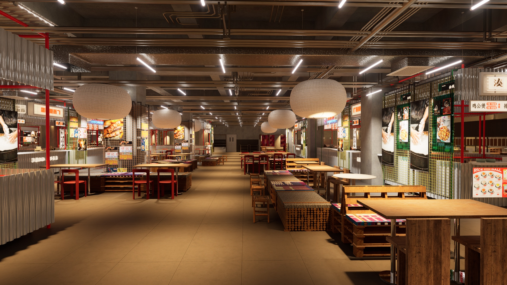

本月经营战役摘要
围绕整体经营规划，以地方食物内容带动到访与消费，同时验证商户协同与招商表达的实际效果。
强内容驱动强运营，强运营反哺招商、租赁与空间资产价值。
地方口袋美食食集 · 2026年8月
先决定费用、测试范围和参与商户，就可以进入小范围执行。
用演示文稿快速看完整策略，只在右侧处理需要老板确认的内容。
围绕整体经营规划，以地方食物内容带动到访与消费，同时验证商户协同与招商表达的实际效果。
强内容驱动强运营，强运营反哺招商、租赁与空间资产价值。
按经营链路查看运营、商户和招商之间的交接结果，只突出阻塞下一阶段的事项。
先处理到期任务、待审核和缺失素材，再查看完整内容成品。
从真实的地方食物、主理人和现场空间出发，形成可阅读、可到访、可消费的本月内容主线。
01从一个具体味道进入地方生活
02让商户、产品和空间共同讲述
03把阅读兴趣承接到现场行动

用内容证据支持商户协同和招商跟进，不把尚未发生的意向写成真实进展。
把运营、商户和招商反馈汇总为证据；缺少的数据明确显示未采集。
因此本月只展示证据准备度，不计算经营 ROI，也不对内容效果作确定归因。
等待真实发布
不能归因
不能归因
用决策备忘录处理预算、优先级和阶段推进，详细依据保留在月报中。
| 经营模块 | 经营判断 | 关键依据 / 缺口 | 证据状态 | 下一动作 |
|---|---|---|---|---|
| 项目经营状态 | 资料整理中 | 项目资料已继承 | 整理中 | 等待经营判断 |